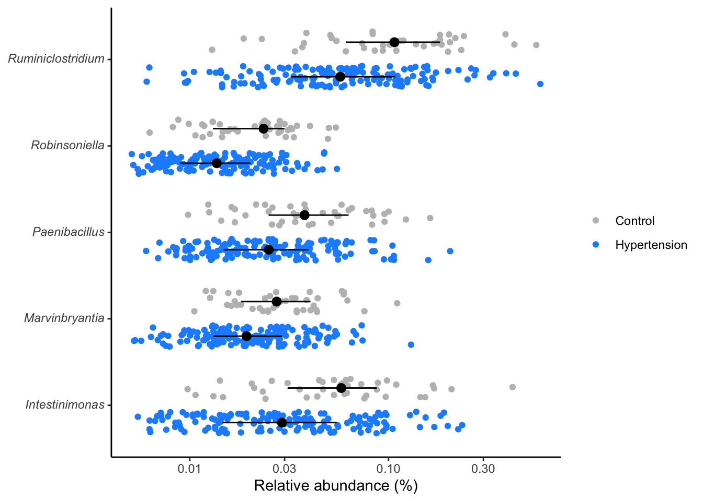
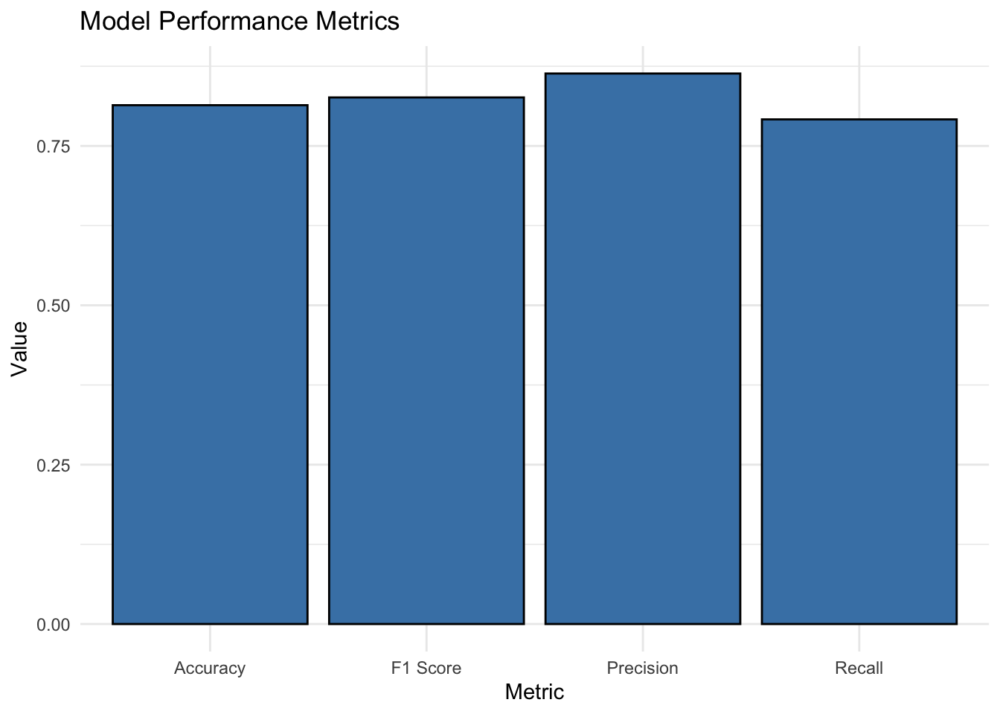

10 Specificity and Sensitivity function
library(purrr)
get_sens_spec <- function(threshold, score, actual, direction){
predicted <- if(direction == "greaterthan") {
score > threshold
} else {
score < threshold
}
tp <- sum(predicted & actual)
tn <- sum(!predicted & !actual)
fp <- sum(predicted & !actual)
fn <- sum(!predicted & actual)
specificity <- tn / (tn + fp)
sensitivity <- tp / (tp + fn)
tibble("specificity" = specificity, "sensitivity" = sensitivity)
}
get_roc_data <- function(x, direction){
# x <- test
# direction <- "greaterthan"
thresholds <- unique(x$score) %>% sort()
map_dfr(.x=thresholds, ~get_sens_spec(.x, x$score, x$srn, direction)) %>%
rbind(c(specificity = 0, sensitivity = 1))
}10.2 Wilcoxon Rank Sum and Signed Rank Tests
The Wilcoxon rank sum test, also known as the Mann-Whitney U test, is a nonparametric test used to assess whether two independent samples have different distributions. It is particularly useful when the assumptions of the t-test are not met, such as when the data is not normally distributed or when the sample sizes are small
library(purrr)
library(dplyr)
library(tidyr)
all_genera <- composite %>%
tidyr::nest(data = -taxonomy) %>%
mutate(test = purrr::map(.x=data, ~wilcox.test(rel_abund~hyper, data=.x) %>% tidy)) %>%
tidyr::unnest(test) %>%
mutate(p.adjust = p.adjust(p.value, method="BH"))
sig_genera <- all_genera %>%
dplyr::filter(p.value < 0.001) %>%
arrange(p.adjust) %>%
dplyr::select(taxonomy, p.value)10.3 View distribution of significant genera
composite %>%
inner_join(sig_genera, by="taxonomy") %>%
mutate(rel_abund = 100 * (rel_abund + 1/20000),
taxonomy = str_replace(taxonomy, "(.*)", "*\\1*"),
taxonomy = str_replace(taxonomy, "\\*(.*)_unclassified\\*",
"Unclassified<br>*\\1*"),
hyper = factor(hyper, levels = c(T, F))) %>%
ggplot(aes(x=rel_abund, y=taxonomy, color=hyper, fill=hyper)) +
# geom_vline(xintercept = 100/10530, size=0.5, color="gray") +
geom_jitter(position = position_jitterdodge(dodge.width = 0.8,
jitter.width = 0.5),
shape=21) +
stat_summary(fun.data = median_hilow, fun.args = list(conf.int=0.5),
geom="pointrange",
position = position_dodge(width=0.8),
color="black", show.legend = FALSE) +
scale_x_log10() +
scale_color_manual(NULL,
breaks = c(F, T),
values = c("gray", "dodgerblue"),
labels = c("Control", "Hypertension")) +
scale_fill_manual(NULL,
breaks = c(F, T),
values = c("gray", "dodgerblue"),
labels = c("Control", "Hypertension")) +
labs(x= "Relative abundance (%)", y=NULL) +
theme_classic() +
theme(
axis.text.y = element_markdown()
)
ggsave("figures/significant_genera.tiff", width=6, height=4)10.4 Significant pathways
Compute the significant pathways using wilcox.test.
library(tidyverse)
all_metabopwy <- metabo_composite %>%
tidyr::nest(data = -metabopwy) %>%
mutate(test = purrr::map(.x=data, ~wilcox.test(rel_abund~hyper, data=.x) %>% tidy)) %>%
tidyr::unnest(test) %>%
mutate(p.adjust = p.adjust(p.value, method="BH"))
sig_metabopwy <- all_metabopwy %>%
dplyr::filter(p.value < 0.3) %>% # Typically, the best significant p-value is set at 0.05
dplyr::select(metabopwy, p.value)10.5 View distribution of significant metabolic pathways
- Compute the significant pathways, then
- P-values or Adjusted P-values (p.adjust) can be used to measure the significance levels.
- View the distribution of the significant pathways.
metabo_composite %>%
inner_join(sig_metabopwy, by="metabopwy") %>%
mutate(rel_abund = 100 * (rel_abund + 1/20000),
metabopwy = str_replace(metabopwy, "(.*)", "*\\1*"),
metabopwy = str_replace(metabopwy, "\\*(.*)_unclassified\\*",
"Unclassified<br>*\\1*"),
hyper = factor(hyper, levels = c(T, F))) %>%
ggplot(aes(x=rel_abund, y=metabopwy, color=hyper, fill=hyper)) +
geom_jitter(position = position_jitterdodge(dodge.width = 0.8,
jitter.width = 0.5),
shape=21) +
stat_summary(fun.data = median_hilow, fun.args = list(conf.int=0.5),
geom="pointrange",
position = position_dodge(width=0.8),
color="black", show.legend = FALSE) +
scale_x_log10() +
scale_color_manual(NULL,
breaks = c(F, T),
values = c("gray", "dodgerblue"),
labels = c("Control", "Hypertension")) +
scale_fill_manual(NULL,
breaks = c(F, T),
values = c("gray", "dodgerblue"),
labels = c("Control", "Hypertension")) +
labs(x= "Relative abundance (%)", y=NULL) +
theme_classic() +
theme(
axis.text.y = element_markdown()
)
ggsave("figures/significant_genera.tiff", width=6, height=4)Here we filter the metabolic pathways at a lesser stringent
p.values(p < 0.25) for demo purposes.